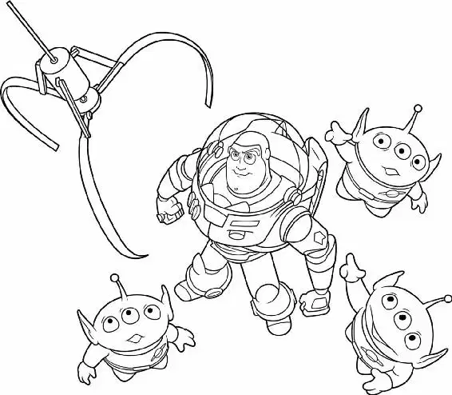

“Andy?” Woody couldn’t believe he’d been left behind. Desperately, he ran after the van, but he couldn’t catch up.
“Doesn’t he realize I’m not there?” Woody cried. “I’m lost! I’m a lost toy!”
Behind him, Buzz flipped open his wrist communicator. “Buzz Lightyear Mission Log. The local sheriff and I seem to be at a huge refueling station of some sort—”
“You!” Woody lunged furiously at Buzz.
But then a loud rumble shook the ground. High-beam headlights blinded the toys, and they froze. A giant tanker truck pulled into the station, and Buzz and Woody hit the asphalt.
The truck roared directly toward them, stopping just a millimeter from Woody’s nose. Glad to be alive, the two toys backed away from the monstrous wheels.
Buzz spoke into his wrist communicator: “According to my navi-computer—”
“Shut up!” Woody cried. “Just shut up!”
“Sheriff, this is no time to panic,” Buzz said firmly.
“This is the perfect time to panic!” Woody snapped. “I’m lost, Andy is gone, they’re going to move from their house in two days, and it’s all your fault!”
“My fault?” Buzz shook his head. “If you hadn’t pushed me out of the window in the first place—”
“Oh, yeah? Well, if you hadn’t shown up in your stupid little cardboard spaceship and taken away everything that was important to me—”
“Don’t talk to me about importance,” Buzz growled. “Because of you, the security of this entire universe is in jeopardy.”
“What? What are you talking about?”
Buzz gazed up into the starry night. He searched the constellations for a moment, then jabbed a finger toward a corner of the sky. “Right now, poised at the edge of the galaxy, Emperor Zurg has been secretly building a weapon with the destructive capacity to annihilate an entire planet! I alone have information that reveals this weapon’s only weakness. And you, my friend, are responsible for delaying my rendezvous with Star Command.”
Woody was speechless. He couldn’t believe that this tiny toy space ranger—probably one of a million already sold—thought he was real. Woody’s anger let loose, and he yelled into Buzz’s face. “YOU ARE A TOY! You aren’t the real Buzz Lightyear. You’re an action figure! You are a child’s plaything!”
Buzz shook his head. “You are a sad, strange little man, and you have my pity. Farewell.”
“Oh, yeah?” Woody glared at Buzz’s back as he strode off into the darkness. “Well, good riddance, ya loony!” He walked away in the opposite direction, muttering under his breath, “‘Rendezvous with Star Command’ . . .”
Ding! Ding! Woody glanced up as a truck pulled in near the station’s door. His face lit up! A teenager went inside to ask directions. And on the side of his truck were two of the most beautiful words Woody had ever seen: PIZZA PLANET.
It was a pizza delivery truck! All Woody had to do was get on it. Sooner or later it would head back to the restaurant where the Davises were having dinner. With any luck, Andy and his mom would still be there!
Woody ran a few steps, then skidded to a stop. “Oh, no! I can’t show my face in that room without Buzz.” He scanned the lot. Buzz was at the other end, stalking away.
“Buzz!” Woody chased after him. “Come back!”
Buzz didn’t even break stride. “Go away.”
“No, Buzz, you’ve gotta come back!” Woody thought hard and fast. Any second now that delivery boy was going to drive the truck away. He and Buzz just had to be on it. Somehow he had to convince Buzz!
Woody kept his eyes on the truck and tried to think.
Wait! That sign on top of the truck’s cab that had the words PIZZA PLANET painted on—it was a rocket ship! Woody snapped his fingers. “Buzz!” he shouted. “I found a spaceship!”
Seconds later, Woody and Buzz peeked out from behind a stack of oilcans on display near the truck. “Now, you’re sure this space freighter will return to its port of origin once it jettisons its food supply?”asked Buzz.
“Uh-huh,” Woody drawled. “And when we get there, we’ll be able to find a way to transport you home.”
“Well, then,” Buzz said firmly, “let’s climb aboard.” He strode toward the driver’s-side door.
“Wait, Buzz! Let’s get in the back. No one will see us there.”
“Negative,” Buzz replied without a second of hesitation. “There are no restraining harnesses in the cargo area. We’ll be much safer in the cockpit.”
Gracefully Buzz leaped into the air, grabbed the side mirror, and swung himself through the open window into the cab. Woody jumped up again and again, desperately trying to reach the mirror. Footsteps! The driver was coming!
Panicking, Woody ran around to the rear and scrambled up over the tailgate. After catching his breath, he moved forward to peer through the window into the cab. Buzz settled into the passenger seat and fastened his seat belt. Luckily, the driver couldn’t see Buzz—he was hidden by a tall stack of pizza boxes. Woody shook his head.
The teenage driver hit the gas, screeching off into traffic. Woody, without a seat belt, slammed against the tailgate and fell into a crumpled pile. He looked up just in time to see a huge metal toolbox tumbling toward him. BAM! Everything went black.
After hurtling through the dark night for what seemed like hours, the pizza delivery truck finally squealed to a halt. Buzz waited till the driver went inside the restaurant. Then he scanned the terrain.
This was Pizza Planet, all right. Two armored sentries stood guard by the front door. Buzz didn’t realize they were just animatronic robots. He thought they were real.
As two humans approached, the guards parted their crossed spears. “You-are-clear-to-enter,” the robots’ recorded voices droned.
“Welcome-to-Pizza-Planet.”
Buzz turned around and pried open the sliding window that opened onto the truck bed. The back of the truck was empty, except for a large toolbox shoved up against the tailgate. “Sheriff!” Buzz hissed. A groggy Woody crawled out from behind the toolbox.
“There you are,” Buzz said. “The entrance is heavily guarded. We need a way to get inside.” Woody rose from the trash that was scattered about the back of the truck with a Mega-Gulp cup stuck on his head.
“Great idea, Woody!” said Buzz. “I like your thinking.”
A few minutes later, the robot guards once again uncrossed their spears, allowing a family to enter Pizza Planet. At the same time, a burger box and a Mega-Gulp cup popped up next to a nearby trash can.
“Now!” cried Buzz from underneath the burger container. Hidden in the fast-food trash, Buzz and Woody rushed the door. “Quickly, Sheriff! The air lock is closing.” Once inside, they sneaked between some video games and tossed off their disguises.
Buzz blinked in amazement. “What a spaceport!” A carnival of sights and sounds filled the room. Pinball machines and video games pinged and flashed.
Woody scanned the mob of kids, looking for one special face. Then he saw him—Andy! He was talking to his mom about a game called Black Hole while Molly giggled and waved in her stroller.
All we have to do,Woody reasoned, is get into that stroller—and we’re home free. He began to inch his way forward, motioning for Buzz to follow.
But Buzz was forging his own path. “Now we need to find a ship that’s headed for Sector Twelve.”
Woody grabbed Buzz by the arm. “No, Buzz. This way. There’s a special ship.” Woody darted toward Molly’s stroller, thinking that Buzz was right behind him.
But Buzz wasn’t right behind him. He’d stopped to stare in wonder at what he thought was the most beautiful spaceship in the entire universe. In reality, it was a prize machine called the Rocket Ship Crane Game—the kind where a player inserted some money, then moved the claw inside to grab a prize and drop it into a slot. And this machine looked like a spaceship. Buzz whistled and headed toward it.
Meanwhile, Woody was all ready to slip into Molly’s stroller when he realized that Buzz wasn’t with him. Woody spotted Buzz climbing up the crane game. “No! This cannot be happening to me!” Woody exclaimed as he stomped down the aisle to get Buzz.
By the time he caught up, Buzz had managed to slip inside the machine. Woody groaned as Buzz leaped into a pile of squeaking squeeze-toy aliens.
“A stranger!” one shouted.
“From the outside!” said another.
“Greetings! I am Buzz Lightyear! I come in peace.”
Reluctantly, Woody climbed into the machine through the prize slot. He plopped down into the squeaky pile of aliens just in time to hear Buzz say, “This is an intergalactic emergency. I need to commandeer your vessel to Sector Twelve! Who’s in charge here?”
The aliens pointed upward reverently. A mechanical claw dangled above them.
“The claw!” they murmured.
“The claw is our master,” said one alien.
“The claw chooses who will go and who will stay,” said another.
“This is ludicrous,” Woody said to himself. Suddenly, Woody heard a familiar but menacing laugh. He turned around and saw Sid heading straight for the crane game.
“Get down!” Woody shouted. He tackled Buzz, dragging them both under a layer of aliens.
“What’s gotten into you, Sheriff?” Buzz exclaimed. Woody started to argue but was interrupted by the sound of Sid stuffing quarters into the coin slot. The machine began to hum. Sid yanked on the joystick. Slowly, the crane jerked around.
“The claw!” cried an alien. “It moves!” Woody inched downward as the crane hovered directly above them. The jaws of the claw snapped open, then plunged into the pile. Woody closed his eyes. He felt the alien just above them rise.
“Gotcha!” Sid exclaimed.
“I have been chosen!” the little rubber creature cried joyfully. “Farewell, my friends. I go on to a better place.”
But now Buzz lay exposed at the top of the pile of aliens. Before Woody could yank him farther down, Sid spotted the toy spaceman. “A Buzz Lightyear? No way!” he exclaimed.
Sid jammed more quarters in for another shot. The crane cranked up. Sid jerked on the joystick, steering the claw toward Buzz.
Woody searched for a way out. At the back of the machine, he spotted a small door. After a few tries, he managed to pry the door open. Woody grabbed Buzz, seizing him by the boots—just as the claw chomped down on his helmet.
“Yes!” Sid cried.
Woody pulled back on Buzz. But then some of the aliens began to fight him, pushing the spaceman upward.
“Hey!” Woody cried. “What are you doing?”
“He has been chosen!” an alien explained.
“Do not fight the claw!” another warned.
Woody hung on to Buzz’s leg and felt himself being dragged into the air.
“All right!” Sid cried at the sight of Buzz and Woody. “Double prizes!” He skillfully maneuvered the claw toward the corner prize slot. The jaws flexed open.
Woody and Buzz tumbled down the slot—and into Sid’s hot, grimy hands. Clutching his prizes, he hurried toward the exit.
“Let’s go home and… play!” laughed Sid.
